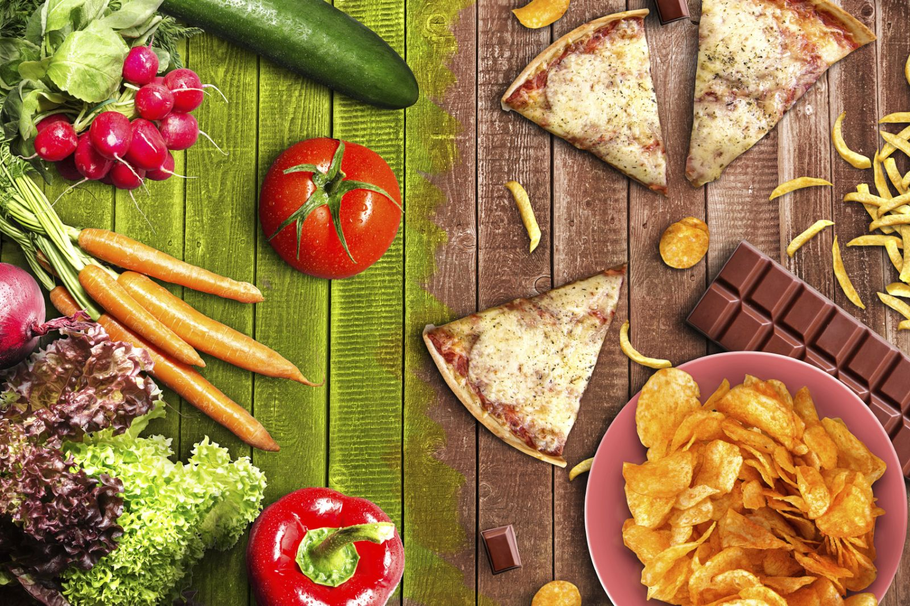

We all know it's much easier to grab a McDonald's for lunch or a ready meal for dinner, but I think we would all stop continuing this bad habit if we knew the long term health impacts it could have- not to mention the amount of money it is pinching out of your pocket! Although it may seem too confusing and time consuming at first, making your own meals gives your body the fuel it needs and makes you feel better knowing that you know exactly what is in your food, rather than packed with preservatives and MSGs. To make your world a whole lot easier, we have collecetd a variety of healthy lunch and dinner ideas for you to choose from. Just pick a meal and enjoy the journey of experimenting! 🥗
Click below to find out how fast food affects the body!
